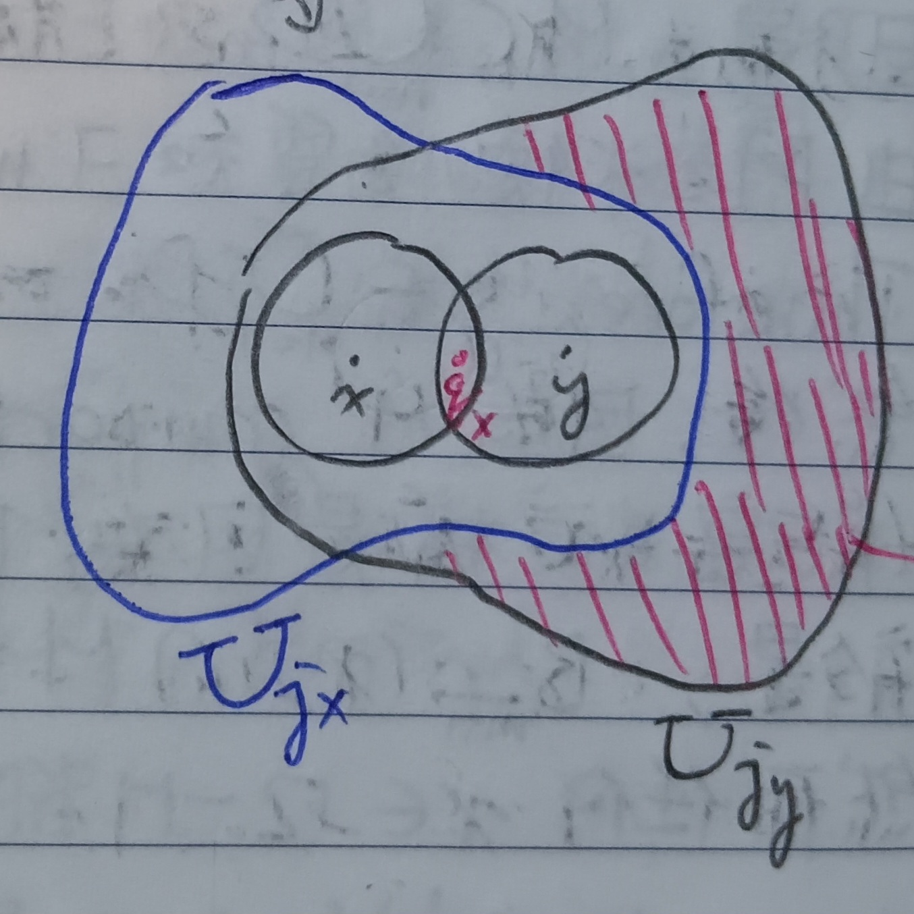

這份筆記是關於緊緻集的定義與性質。
收斂點列
定義 1：收斂點列 (Convergence Points Sequence)
給定\(\mathbb{R}^N\)上的歐幾里得距離\(\|\cdot\|\)，並給定點列\(\{X^j\}_{j=1}^\infty\subseteq\mathbb{R}^N\)。對於\(X\in\mathbb{R}^N\)，若對於所有\(\epsilon>0\)都存在\(N_0\in\mathbb{N}\)使得對於所有\(j>N_0\)都有\(\|X^j-X\|<\epsilon\)，則說點列\(\{X_j\}\)收斂至\(X\)，記做 \[ \lim_{j\to\infty}X^j=X \]
引理 2
給定\(\mathbb{R}^N\)上的歐幾里得距離\(\|\cdot\|\)，並給定點列\(\{X^j\}_{j=1}^\infty\subseteq\mathbb{R}^N\)，其中\(X^j\)的座標為 \[
X^j=\left(x_1^j,x_2^j,\cdots,x_N^j\right)
\] 考慮\(X=(x_1,x_2,\cdots,x_N)\)。則\(X^j\)收斂至\(X\)若且唯若對於所有\(k\)都有\(x_k^j\to
x_k\)。
證明：我們分兩個部分證明。
「\(\Rightarrow\)」：由於\(X^j\to X\)，故給定\(\epsilon>0\)，應存在\(N_0\in\mathbb{N}\)使得對於所有\(j>N_0\)有\(\|X^j-X\|<\epsilon\)。故 \[
|x_k^j-x_k|\leq\sqrt{\sum_{l=1}^N\left(x_l^j-x_l\right)^2}=\|X^j-X\|<\epsilon
\] 故當\(j\to\infty\)時有\(x_k^j\to x_k\)。
「\(\Leftarrow\)」：若對於所有\(k=1,2,\cdots,N\)有\(x_k^j\to x_k\)，則給定\(\epsilon>0\)，應存在\(N_k\in\mathbb{N}\)使得對於所有\(j>N_k\)有 \[
\left|x_k^j-x_k\right|<\frac{\epsilon}{N}
\] 令\(N_0=\max\{N_1,N_2,\cdots,N_N\}\)，則對於\(j>N_0\)有 \[
\|X^j-X\|=\sqrt{\sum_{k=1}^N\left(x_k^j-x_k\right)^2}<\sqrt{\sum_{k=1}^N\left(\frac{\epsilon}{N}\right)^2}=\frac{\epsilon}{\sqrt{N}}\leq\epsilon
\] 故當\(j\to\infty\)時有\(X^j\to X\)。QED
緊緻
定義 3：緊緻 (Compact)
給定集合\(M\)，若任意\(M\)的開覆蓋都有有限子覆蓋，則稱\(M\)為緊緻集。即若\(M\)為緊緻集，則對於任意一串滿足 \[ M\subseteq\bigcup_{j\in I}U_j \] 的開集集族\(\{U_j\}_{j\in I}\)，都存在有限集\(J\subseteq I\)使得 \[ M\subseteq\bigcup_{j\in J}U_j \]
性質 3-1
給定集合\(M\subseteq\Omega\)與其上的度量\(d\)，若\(M\)是緊緻集，則\(M\)必是閉集。
證明：給定集合\(M\)與宇集\(\Omega\)，若\(M\)緊緻，則給定\(x\in\Omega/M\)，令 \[ D_n=\left\{y\in\Omega:d(y,x)>\frac{1}{n}\right\} \] 很容易可以知道\(D_n\)是開集。我們希望說明 \[ M\subseteq\bigcup_{n=1}^\infty D_n \] 對於任意\(y\in M\)，由於\(x\notin M\)，我們有\(d(x,y)>0\)。由阿基米德性質(這裡的性質22)可知存在\(m\in\mathbb{N}\)使得 \[ 0<\frac{1}{m}<d(x,y) \] 故可知\(y\in D_m\)，於是有 \[ y\in\bigcup_{n=1}^\infty D_n \] 這對於任意\(y\in M\)都成立，故 \[ M\subseteq\bigcup_{n=1}^\infty D_n \] 接著，因為\(M\)是緊緻集且又有\(D_1\subseteq D_2\subseteq D_3\subseteq\cdots\)，應存在某個\(m\in\mathbb{N}\)使得 \[ M\subseteq\bigcup_{n=1}^m D_n \] 於是有\(B_{1/(m+1)}(x)\cap M=\varnothing\)，即\(B_{1/(m+1)}(x)\subseteq\Omega/M\)。然而任意的\(x\in\Omega/M\)都可以找到這樣的\(m\)，故\(\Omega/M\)是開集，即\(M\)是閉集。QED
性質 3-2
緊緻集的任意閉子集都是緊緻的。
證明：給定宇集\(\Omega\)中的緊緻集\(M\)，並給定其閉子集\(A\)。令\(\{U_j\}_{j\in I}\)是\(A\)的一個開覆蓋，即\(\{U_j\}\)是一堆開集且 \[ A=\bigcup_{j\in I}U_j \] 由於\(A\)是閉集，故\(\Omega/A\)是開集。而 \[ M\subseteq\Omega=A\cup(\Omega/A)=\left(\bigcup_{j\in I}U_j\right)\cup(\Omega/A) \] 上式的最右邊是\(M\)的開覆蓋，而由於\(M\)是緊緻集，故存在有限集\(J\subseteq I\)使得 \[ M\subseteq\left(\bigcup_{j\in J}U_j\right)\cup(\Omega/A) \] 又\(A\subseteq M\)，故\(\bigcup\limits_{j\in J}U_j\)是\(A\)的有限子覆蓋。這對任意的開覆蓋\(\{U_j\}_{j\in I}\)都成立，故\(A\)是緊緻集。QED
定義 4：有界 (Bounded)
給定集合\(K\)，若存在\(R>0\)滿足\(K\subseteq B_R(0)\)，則稱\(K\)是有界集。
定理 5
給定有界閉集\(M\subseteq\mathbb{R}^N\)，並給定一串開集\(\{U_j\}_{j\in I}\)滿足\(M\subseteq\bigcup\limits_{j\in
I}U_j\)，則存在可數集\(J\subseteq
I\)使得\(M\subseteq\bigcup\limits_{j\in
J}U_j\)。
證明：給定\(x\in M\)，則必存在\(j_x\in I\)使得\(x\in U_{j_x}\)。由於\(U_{j_x}\)是開集，故存在\(r_{j_x}\)使得\(B_{j_x}\subseteq U_{j_x}\)。可以假設\(r_{j_x}<1\)。而有 \[ B_{\frac{r_{j_x}}{20}}(x)\subseteq B_{r_{j_x}}(x)\subseteq U_{j_x} \] 則應存在\(q_x\in\mathbb{Q}^N\)使得\(q_x\in B_{r_{j_x}/20}(x)\)。我們可以記 \[ U_{j_x}=U_{q_x} \] 於是有 \[ M=\bigcup_{x\in M}\{x\}\subseteq\bigcup_{x\in M}U_{j_x}=\bigcup_{q_x\in M\cap\mathbb{Q}^N}U_{q_x} \] 這樣看似是找到可數集\(J=M\cap\mathbb{Q}^N\)了，但這是有問題的。若有\(x\notin y\)使得\(q_x=q_y\)，則\(U_{j_x}\)和\(U_{j_y}\)可能都會被標記為\(U_{q_x}\)。從下圖1來看，這樣會導致紅色斜線的部分被丟掉。
對於\(q_x=q_y\)的\(x\neq y\)，底下簡記\(r_{j_x}=r_x\)，\(r_{j_y}=r_y\)，有 \[ \begin{aligned} |y-q_y|&<\frac{r_y}{20}\\ |x-q_x|&<\frac{r_x}{20} \end{aligned} \] 故 \[ \begin{aligned} |x-y|&=|x-q_x+q_x-y|\\ &=|x-q_x+q_y-y|\;\;(q_x=q_y)\\ &\leq|x-q_x|+|y-q_y|\\ &<\frac{r_x}{20}+\frac{r_y}{20}\\ &\leq\frac{2}{20}\max\{r_x,r_y\} \end{aligned} \] 假設\(r_y\geq r_x\)，則\(|x-y|\leq\frac{2}{20}r_y\)，故有 \[ x\in B_{\frac{3}{20}r_y}(y)\subseteq B_{r_y}(y)\subseteq U_{j_y} \] 固定\(x\)和\(q_x\)，令\(A=\{y\in M:q_y=q_x\}\)，並令 \[ r=\sup_{y\in A}\{r_y\} \] 我們有\(0<r\leq 1\)，則必存在\(x_0\in A\)使得 \[ r_{x_0}>\frac{19}{20}r \] (不然\(r\)就不是最小上界了)。我們希望說明\(B_{r_{x_0}}\supseteq A\)。由於\(q_{x_0}=q_y=q_x\)，故對於\(y\in A\)有 \[ \begin{aligned} |y-x_0|&=|y-q_y+q_{x_0}-x_0|\\ &\leq|y-q_y|+|q_{x_0}-x_0|\\ &\leq\frac{r_y}{20}+\frac{r_{x_0}}{20}\\ &\leq\frac{2}{20}r<\frac{19}{20}r \end{aligned} \] 故\(y\in B_{r_{x_0}}(x_0)\)，即\(A\subseteq B_{r_{x_0}}(x_0)\)。接著，我們定義等價關係\(\sim\)為 \[ x\sim y\Leftrightarrow q_x=q_y \] 並定義 \[ r^x=\sup_{y\sim x}\{r_y\} \] 則同上，應存在\(x_0\sim x\)使得\(r_{x_0}>\frac{19}{20}r^x\)，且應有 \[ \{y\}_{y\sim x_0}\subseteq B_{r_{x_0}}(x_0)\subseteq U_{j_{x_0}} \] 於是，一整個\(\{y\}_{y\sim x_0}\)都可以用\(U_{j_{x_0}}\)來覆蓋，而我們又可以用\(q_{x_0}\)來標記\(U_{j_{x_0}}\)，故有 \[ M\subseteq\bigcup U_{q_{x_0}} \] 而\(\{q_{x_0}\}\subseteq\mathbb{Q}^N\)又是可數集，就有我們要證的了。QED
波爾札諾-魏爾斯特拉斯定理
定義 6：序列緊緻 (Sequentially Compact)
給定集合\(M\)，若\(M\)中所有序列都有在\(M\)收斂的子序列，則稱\(M\)是序列緊緻的。
(例如這裡的定義2-1-1定義的緊緻其實是序列緊緻。)
引理 7
給定集合\(M\)，則\(M\)是閉集 iff. 所有\(M\)中的收斂序列都收斂到\(M\)中。
證明：我們分成兩部分證明。
「\(\Rightarrow\)」：若\(M\)是閉集，則\(U=\Omega/M\)是開集，其中\(\Omega\)是給定的宇集。考慮序列\(\{x_n\}\subseteq M\)，其中\(x_n\)收斂至\(x\in\Omega\)。若\(x\in U\)，則由於\(U\)是開集，故存在\(\epsilon>0\)使得\(B_\epsilon(x)\subseteq U\)。而\(x_n\to x\)代表存在某個\(N\in\mathbb{N}\)使得對於所有\(n>N\)有\(x_n\in B_\epsilon(x)\)。這會導致\(x_n\in U\)，矛盾。故應有\(x\in M\)。
「\(\Leftarrow\)」：若\(M\)中的收斂序列都收斂到\(M\)中，則假設\(U=\Omega/M\)不是開集，則應存在\(x\in U\)使得不存在\(\epsilon>0\)使得\(B_\epsilon(x)\subseteq U\)。對於\(n\in\mathbb{N}\)，考慮\(\epsilon=1/n\)。由前述可知對於所有\(n\)都應存在\(x_n\in M\)使得 \[
x_n\in B_{1/n}(x)
\] 很顯然數列\(\{x_n\}\subseteq
M\)收斂至\(x\)。然而由假設知\(\{x_n\}\)應收斂至某個\(M\)中的點，但\(x\notin M\)，矛盾。故\(U\)應是開集 i.e. \(M\)應是閉集。QED
註記 8
若集合\(M\)是序列緊緻的，則\(M\)是有界閉集。
證明：首先，顯然\(M\)應該要是有界的，否則可以很容易建構出一個\(M\)中的無界序列是沒有收斂子序列的。接著，由引理7我們可以很容易知道\(M\)應是閉集。QED
例 8-1
註記8反過來不一定會成立，只有在如\(\mathbb{R}^n\)等的空間中有界閉集會都是序列緊緻的(可見底下的定理14)。一般來說這不一定會成立。考慮\(X=\mathbb{Z}\times\mathbb{Z}\subseteq\mathbb{R}^2\)，並定義其上的度量為 \[ d(x,y)=\left\{ \begin{aligned} 0&,\mbox{ if }x=y\\ 1&,\mbox{ if }x\neq y \end{aligned} \right.,x,y\in\mathbb{R}^2 \] 考慮\(x\in\mathbb{R}^2/X\)，我們有 \[ B_{1/2}(x)=\{x\}\subseteq\mathbb{R}^2/X \] 故\(\mathbb{R}^2/X\)是開集i.e.\(X\)是閉集。且對於所有\(x,y\in X\)有\(d(x,y)<2\)，故\(X\)是有界的。但考慮\(X\)中的數列 \[ (1,0),(2,0),(3,0),\cdots \] 這個數列顯然沒有收斂子序列，及\(X\)不是序列緊緻的。
引理 9：勒貝格數 (Lebesgue Number)
給定度量空間中的集合\(K\)。若\(K\)是序列緊緻的，且\(\{U_j\}_{j\in I}\)是\(K\)的開覆蓋，則存在\(\epsilon>0\)使得對於所有\(x\in K\)都存在\(j\in I\)使得 \[
B_\epsilon(x)\subseteq U_j
\] 這個\(\epsilon\)稱為開覆蓋\(\{U_j\}_{j\in I}\)的勒貝格數。
證明：假設對於所有\(\epsilon>0\)都存在\(x_\epsilon\in K\)使得對於所有\(j\in I\)有 \[ B_\epsilon(x)\nsubseteq U_j\mbox{ (★)} \] 則對於\(n\in\mathbb{N}\)，令\(\epsilon=1/n\)，並記相對應的\(x_\epsilon\in K\)為\(x_n\)。我們有\(\{x_n\}_{n=1}^\infty\subseteq K\)。由於\(K\)是序列緊緻的，故存在\(\{x_n\}\)的子序列\(\{x_{n_j}\}_{j=1}^\infty\)使得其收斂到某個\(x\in K\)。而由於 \[ K\subseteq\bigcup_{j\in I}U_j \] 故應存在\(i\in I\)使得\(x\in U_i\)。而由於\(U_i\)是開集，故應存在\(r>0\)使得 \[ x\in B_r(x)\subseteq U_i \] 又因為\(x_{n_j}\to x\)，故應存在\(N_0\in\mathbb{N}\)使得對於所有\(n_j>N_0\)有 \[ \|x_{n_j}-x\|<\frac{1}{10}r \] 我們可以找到夠大的\(n_j\)使得\(n_j>N_0\)的同時有\(\frac{1}{n_j}<\frac{1}{10}r\)，則 \[ B_{1/n_j}(x_{n_j})\subseteq B_r(x)\subseteq U_i \] 這與一開始的假設(★)矛盾。故開覆蓋\(\{U_j\}_{j\in I}\)應存在某個大於零的勒貝格數。QED
定義 10：完全有界 (Totally Bounded)
給定度量空間中的集合\(D\)。若對於所有\(\epsilon>0\)都存在有限集\(\{x_j\}_{j=1}^m\subseteq D\)使得 \[ D\subseteq\bigcup_{j=1}^m B_\epsilon(x_j) \] 則稱\(D\)是完全有界的。
引理 11
在度量空間中，若一集合\(K\)序列緊緻，則\(K\)完全有界。
證明：假設集合\(K\)序列緊緻卻不完全有界。則存在\(\epsilon>0\)使得對於所有有限集\(\{x_j\}_{j=1}^m\subseteq K\)都有 \[ K/\left(\bigcup_{j=1}^m B_\epsilon(x_j)\right)\neq\varnothing \] 於是，可以挑選\(x_1\in K\), \(x_2\in K/B_\epsilon(x_1)\), \(K_3\in K/(B_\epsilon(x_1)\cup B_\epsilon(x_2))\)，並如此不斷繼續下去，即 \[ x_{n+1}\in K/\left(\bigcup_{j=1}^n B_\epsilon(x_j)\right) \] 這樣可以建構出數列\(\{x_n\}_{n=1}^\infty\subseteq K\)。由於\(K\)是序列緊緻的，故存在\(\{x_n\}\)的子序列\(\{x_{n_j}\}_{j=1}^\infty\)使得其收斂到某個\(x\in K\)。於是應存在\(N_0\in\mathbb{N}\)使得對於所有\(n_j>N_0\)有 \[ \|x_{n_j}-x\|<\frac{\epsilon}{4} \] 於是對於這樣夠大的\(j\)有 \[ \begin{aligned} \|x_{n_{j+1}}-x_{n_j}\|&\leq\|x_{n_{j+1}}-x\|+\|x-x_{n_j}\|\\ &<\frac{\epsilon}{4}+\frac{\epsilon}{4}\\ &=\frac{\epsilon}{2}\\ &<\epsilon \end{aligned} \] 即\(x_{n_{j+1}}\in B_\epsilon(x_{n_j})\)，矛盾。故\(K\)應是完全有界的。QED
引理 12
在度量空間中，若一集合\(K\)緊緻，則\(K\)完全有界。
證明：首先，顯然對於所有\(\epsilon>0\)，有 \[ K\subseteq\bigcup_{x\in K}B_\epsilon(x) \] 而上式的右手邊是\(K\)的一個開覆蓋。由於\(K\)是緊緻的，故應存在有限集\(\{x_j\}_{j=1}^m\subseteq K\)使得 \[ K\subseteq\bigcup_{j=1}^m B_\epsilon(x_j) \] 即\(K\)是完全有界的。QED
定理 13：波爾札諾-魏爾斯特拉斯定理 (Bolzano-Weierstrass Theorem)
在度量空間中(底下就假設是\(\mathbb{R}^N\))，序列緊緻和緊緻是等價定義。
證明1：我們分成兩個部分證明。
「序列緊緻\(\Rightarrow\)緊緻」：給定序列緊緻集\(M\subseteq\mathbb{R}^N\)，由註記8可知\(M\)一定是有界閉集。令 \[
M\subseteq\bigcup_{j\in I}U_j
\] 為\(M\)的開覆蓋。由於\(M\)是有界閉集，故由定理5知存在可數集\(J\subseteq I\)使得 \[
M\subseteq\bigcup_{j\in J}U_j
\] 假設\(M\)不是緊緻的，即找不到有限子覆蓋，則\(J\)不能是有限集，應有\(|J|=|\mathbb{N}|\)。既然如此，其實令\(J=\mathbb{N}\)也無妨。由假設知對於所有\(n\in\mathbb{N}\)，必有 \[
M\nsubseteq\bigcup_{j=1}^n U_j
\] 即存在\(x_n\in M\)使得 \[
x_n\notin\bigcup_{j=1}^n U_j\mbox{ (☆)}
\] 考慮數列\(\{x_n\}_{n=1}^\infty\subseteq
M\)。由於\(M\)是序列緊緻的，故存在\(\{x_n\}\)的子序列\(\{x_{n_k}\}_{k=1}^\infty\)使得其收斂到某個\(x\in M\)。而由於 \[
M\subseteq\bigcup_{j=1}^\infty U_j
\] 故應存在\(l\in\mathbb{N}\)使得\(x\in U_l\)，於是對於所有\(m\geq l\)有 \[
x\in\bigcup_{j=1}^m U_j
\] 又由於\(U_l\)是開集，故應存在\(\epsilon>0\)使得\(B_\epsilon(x)\subseteq U_l\)。且由於\(x_{n_k}\to x\)，故應存在\(N_0\in\mathbb{N}\)使得對於所有\(n_k>N_0\)有\(x_{n_k}\in B_\epsilon(x)\)。故對於任意\(m\geq l\)有 \[
x_{n_k}\in B_\epsilon(x)\subseteq U_l\subseteq\bigcup_{j=1}^m U_j
\] 即當\(n_k\)同時也比\(l\)大時會導致 \[
x_{n_k}\subseteq\bigcup_{j=1}^{n_k}U_j
\] 這與假設(☆)矛盾，故應存在有限集\(J\)使得 \[
M\subseteq\bigcup_{j\in J}U_j
\] 即\(M\)是緊緻的。
「緊緻\(\Rightarrow\)序列緊緻」：給定緊緻集\(K\subseteq\mathbb{R}^N\)，我們可以給定序列\(\{x_n\}_{n=1}^\infty\subseteq
K\)，並且對於\(l\in\mathbb{N}\)，令\(\epsilon=\frac{1}{2^l}\)。由引理12可知對於所有\(\epsilon_l\)都應存在序列 \[
\{x_j^l\}_{j=1}^{l^\ast}\subseteq K
\] (其中\(l^\ast\in\mathbb{N}\))使得 \[
K\subseteq\bigcup_{j=1}^{l^\ast}B_{\epsilon_l}(x_j^l)
\] \(l=1\)時，因為 \[
\{x_n\}\subseteq K\subseteq\bigcup_{j=1}^{1^\ast}B_{\epsilon_1}(x_j^1)
\] 故應存在\(x_{j_1}^1\in\{x_j^1\}\)使得\(B_{\epsilon_1}(x_{j_1}^1)\)裡面有無限多個\(\{x_n\}\)中的點。把這些點記做\(\{x_{1,j}\}_{j=1}^\infty\)。接著，也會有某個\(x_{j_2}^2\in\{x_j^2\}_{j=1}^{2^\ast}\)使得\(B_{\epsilon_2}(x_{j_2}^2)\)中有無限多個\(\{x_{1,j}\}\)中的點，並再記這些點為\(\{x_{2,j}\}\)。顯然會有 \[
\{x_{2,j}\}\subseteq\{x_{1,j}\}
\] 如此迴環往復，可以建構出一個\(\{x_n\}\)的子序列\(\{x_{n_k}\}_{k=1}^\infty\)使得越後面的項會被包在\(l\)越來越大的 \[
B_{\epsilon_l}(x_{j_l}^l)\subseteq
B_{\epsilon_{l-1}}(x_{j_{l-1}}^{l-1})\subseteq\cdots
\] 中(即半徑越來越小)。故\(\{x_{n_k}\}\)會收斂到某個\(x\)。由性質3-1知\(K\)是閉集，接著由引理7知\(x\in K\)。於是可知\(K\)是序列緊緻的。QED
證明2：「序列緊緻\(\Rightarrow\)緊緻」的部分可以用另一種方式證明。令\(K\)為一序列緊緻集，且令\(\{U_j\}_{j\in I}\)為\(K\)的開覆蓋。則由引理9知存在\(\epsilon>0\)使得對於所有\(x\in K\)，存在某個\(j_x\in I\)使得 \[
B_\epsilon(x)\subseteq U_{j_x}\mbox{ (✪)}
\] 又由引理12知\(K\)是完全有界的，故存在有限集\(\{x_i\}_{i=1}^m\subseteq K\)使得 \[
K\subseteq\bigcup_{i=1}^m B_\epsilon(x_i)\mbox{ (⍟)}
\] 把(✪)和(⍟)結合在一起，可知 \[
K\subseteq\bigcup_{i=1}^m B_\epsilon(x_i)\subseteq\bigcup_{i=1}^m
U_{j_{x_i}}
\] 最右邊是\(K\)的有限開覆蓋，故可知\(K\)是緊緻的。QED
波雷爾-海涅定理
定理 14：波雷爾-海涅定理 (Borel-Heine Theorem)
給定集合\(K\subseteq\mathbb{R}^N\)，則\(K\)是緊緻集 iff. \(K\)是有界閉集。
證明：若\(K\)是緊緻集，則由定理13與註記8知\(K\)是有界閉集。而若\(K\)是有界閉集，由於\(K\)落在\(\mathbb{R}^N\)中，故考慮數列\(\{x^j\}_{j=1}^\infty\in K\)，可以令 \[
x^j=(x_1^j,x_2^j,\cdots,x_N^j)
\] 由於\(K\)有界，故存在\(R>0\)使得對於所有\(x\in K\)有\(\|x\|<R\)。也就是說，對於所有\(k=1,2,\cdots,N\)和\(j=1,2,3,\cdots\)有\(\left|x_k^j\right|<R\)。於是，我們知道\(\{x_1^j\}_{j=1}^\infty\)是\(\mathbb{R}\)中的有界數列，故由這裡的定理13知存在\(\{x_1^j\}_{j=1}^\infty\)的收斂子序列\(\{x_1^{j_1}\}_{j_1\in J_1}\)，其中\(J_1\subseteq\mathbb{N}\)且\(|J_1|=\infty\)。
然後，考慮\(\{x_2^{j_1}\}_{j_1\in
J_1}\)。我們知道這也是有界數列，故存在 \[
J_2\subseteq J_1/\{J_1\mbox{的第一個元素}\}
\] 使得\(\{x_2^{j_2}\}_{j_2\in
J_2}\)收斂且\(|J_2|=\infty\)。如此迴環往復，可以建構出一連串的柯西序列\(\{x_k^{j_k}\}_{j_k\in J_k}\), \(k=1,2,\cdots,N\)，且\(|J_k|=\infty\)。然後，考慮\(K\)中的數列 \[
\{x^{j_N}\}_{j_N\in
J_N}=\left\{(x_1^{j_N},x_2^{j_N},\cdots,x_N^{j_N})\right\}_{j_N\in J_N}
\] 可以發現這是\(\{x^j\}_{j=1}^\infty\)的子序列，又由上述可知這應是柯西序列。故\(\{x^{j_N}\}\)是\(\{x^j\}\)的收斂子序列，即存在\(x\in\mathbb{R}^N\)使得 \[
\lim_{j_N\to\infty}x^{j_N}=x
\] 而又由於\(K\)是閉集，故由引理7知\(x\in K\)。故可知\(K\)是序列緊緻的，而由定理13又可知\(K\)為緊緻的。QED
註記 14-1：緊緻集的等價定義
由上述可知底下三個敘述在\(\mathbb{R}^N\)中等價：
1. \(K\)是緊緻的。
2. \(K\)是序列緊緻的。
3. \(K\)是有界閉集。
緊緻集的巢狀性質
性質 15：緊緻集的巢狀性質 (Nested Property of Compact Sets)
給定\(K_1\supseteq K_2\supseteq K_3\supseteq\cdots\)為一串在\(\mathbb{R}^N\)上的緊緻集，且對於所有\(i\)有\(K_i\neq K_{i+1}\)且\(K_i\neq\varnothing\)，則 \[ \bigcap_{j=1}^\infty K_j\neq\varnothing \]
證明：給定\(n\in\mathbb{N}\)。由於 \[ \bigcap_{j=1}^n K_j=K_n\neq\varnothing \] 故可考慮 \[ x_n\in\bigcap_{j=1}^n K_j=K_n \] 可以發現\(\{x_n\}_{n=1}^\infty\)是緊緻集\(K_1\)中的數列，故其應存在收斂子序列\(\{x_{n_j}\}_{j=1}^\infty\)(由定理13知緊緻集都是序列緊緻集)。令 \[ \lim_{j\to\infty}x_{n_j}=x \] 我們希望說明對於所有\(l\in\mathbb{N}\)有\(x\in K_l\)。由於\(j\leq n_j\)，故我們知道 \[ x_{n_j}\in K_{n_j}\subseteq K_j \] 故\(\{x_{n_j}\}_{n_j\geq l}\subseteq K_l\)。由於\(\{x_{n_j}\}\)收斂且\(K_l\)是緊緻集，故 \[ \lim_{j\to\infty}x_{n_j}=x\in K_l \] 這對於所有\(l\)都成立。故 \[ x\in\bigcap_{j=1}^\infty K_j \] 即 \[ \bigcap_{j=1}^\infty K_j\neq\varnothing \] QED
例 15-1
若將巢狀性質中的「緊緻集」換成「閉集」則該性質不一定會成立。考慮 \[ K_1=[1,\infty), K_2=[2,\infty),\cdots,K_n=[n,\infty),\cdots \] 顯然對於所有\(n\)，\(K_n\)都是閉集，且\(K_n\)非空，\(K_n\neq K_{n+1}\)。但很明顯就有 \[ \bigcap_{j=1}^\infty K_j=\varnothing \]
例 15-2
若將巢狀性質中的「緊緻集」換成「有界集」則該性質也不一定會成立。考慮 \[ K_1=(0,1), K_2=\left(0,\frac{1}{2}\right),\cdots,K_n=\left(0,\frac{1}{n}\right) \] 顯然對於所有\(n\)，\(K_n\)都是有界集，且\(K_n\)非空，\(K_n\neq K_{n+1}\)。但很明顯就有 \[ \bigcap_{j=1}^\infty K_j=\varnothing \]